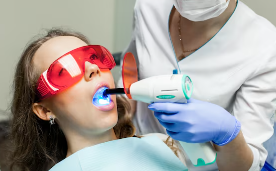

Especialidades

Nuestra tecnología láser de baja intensidad permite bioestimular las aftas y lesiones bucales, eliminando el dolor de forma instantánea sin necesidad de fármacos ni contacto doloroso. Es un tratamiento ideal para quienes sufren de llagas recurrentes.
Recupere el bienestar hoy mismo.
Consultar por WhatsApp